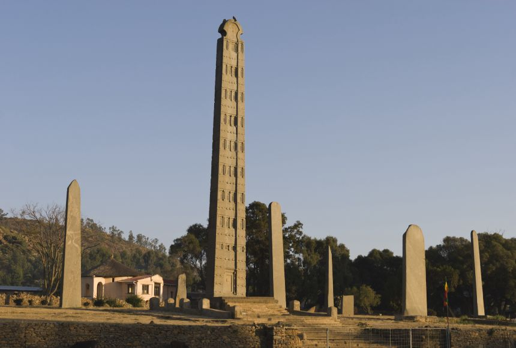
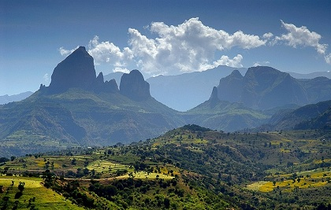

Abba Jifar Place
Before being incorporated into the central Christian Empire of Ethiopia, Jimma was one and the strongest of the five autonomous Gibe kingdoms of the Oromo people under the leadership of Abba Jifar Abba Gomal, best known as king Abba Jifar also known by his Islamic name (Sultan Muhammad Dawud Ibn Ibrahim) of Jimma.

King Ezanas Axum
The ancient kingdom of Aksum was located in present-day Ethiopia. This wealthy African civilization celebrated its achievements with monuments like King Ezana's stela in Stelae Park, Ethiopia.

Fasil Ghebbi Gondar
During unsettled periods between the thirteenth and seventeenth centuries, Ethiopian rulers moved their royal camps frequently. King Fasil (Fasiledes) settled in Gondar and established it as a permanent capital in 1636. After Fasil, successive kings continued building, improving the techniques and architectural style.

Simien Mountains
The Simien Mountains National Park in Northern Ethiopia is an exotic setting with unique wildlife and breath-taking views on a landscape shaped by nature and traditional agriculture. The natural beauties of this region have always filled visitors from Ethiopia and abroad with awe. Gentle highland ridges at altitudes above 3600 meters above sea level (m asl), covered with grasses, isolated trees (Erica &bored) and the bizarre Giant Lobelia (Lobelia rhynchopetalum) are found on the high plateau that ends abruptly at 1000- to 2000-m deep escarpments.

Kumsa Moroda Palaces
Before being incorporated into the central Christian Empire of Ethiopia, Jimma was one and the strongest of the five autonomous Gibe kingdoms of the Oromo people under the leadership of Abba Jifar Abba Gomal, best known as king Abba Jifar also known by his Islamic name (Sultan Muhammad Dawud Ibn Ibrahim) of Jimma.

Dirre Sheik Hussein
Dirre Sheik Hussein (Shrine): It is situated on the border of West Harargé and Balé Zones at the Southern edge of Web River. It is 178 km far from Robé along the all weather road that passes through Jarra, and Dallo Sabro towns. The Shrine is named after an ancient muslim holy man (religious leader) called Sheikh Nur Husein bin Malka or bin Ibrahim who was reputed for his religious teachings, high devotion and remarkable miraculous deeds.


.jpg)